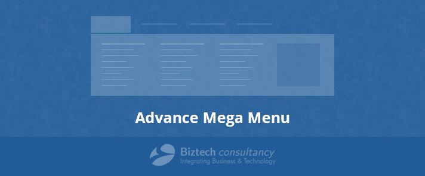
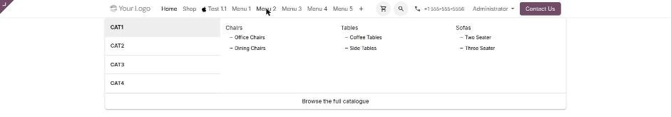
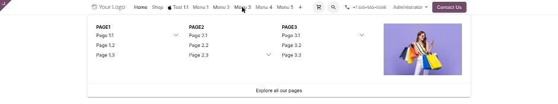
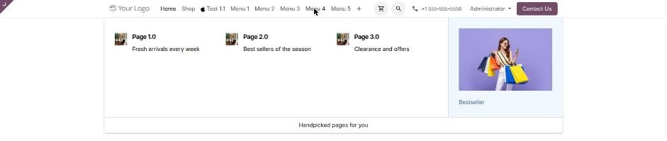
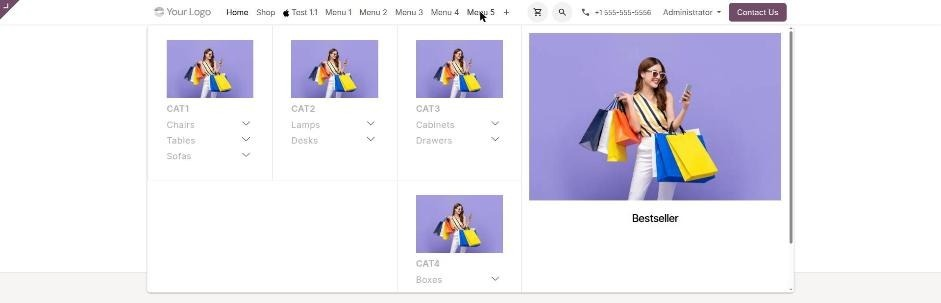

Advance Mega Menu
Turn any website menu into a rich, multi-column mega menu. Showcase product categories and sub categories, link website pages, add a category slider, a promotional image and a menu footer — all from the back end, with no template editing.

Why Your Store Needs It
A flat dropdown hides your catalogue. A mega menu puts it all one click away.
Show the whole catalogue
Main categories, sub categories and their children render together in one panel instead of a chain of nested dropdowns shoppers have to hunt through.
Promote while they browse
A category slider, a static promotional image with its own HTML text, and a menu footer message turn navigation into merchandising space.
No developer required
Every layout, colour, image and link is a field on the menu form. Nothing here asks you to touch a QWeb template or write SCSS.
Six Mega Menu Layouts
Choose a layout per menu in the Megamenu View Type field. Every menu on your site can use a different one.
1. Category Mega Menu
Shows: main categories with their sub categories across your chosen number of columns, plus an optional moving category slider or a static image on the left or right.
Best for: stores whose catalogue is the main navigation.

2. List Category Mega Menu
Shows: a tabbed list — main categories down the left, the selected category's sub categories and description on the right.
Best for: deep catalogues where a flat grid would overflow.

3. Pages Mega Menu
Shows: website pages and their child menus laid out inside the panel.
Best for: company, service and content sites.

4. Pages Mega Menu Pro
Shows: the same page links, each with a display icon and a short description.
Best for: service menus that need explaining, not just listing.

5. Pages Mega Menu Pro Max
Shows: icons and descriptions plus a static image block with its own rich-text content and a menu footer.
Best for: a flagship menu that doubles as a landing panel.

6. Pages & Category Mega Menu
Shows: website pages and product categories side by side in a single panel.
Best for: shops that sell and publish in equal measure.

Set Up In Four Steps
Everything happens on the standard menu form under Website › Site › Menus.
Turn it on
Open a menu and tick Is megamenu...? — the full set of mega menu options appears on the form.
Pick a layout
Set Megamenu View Type to one of the six layouts, and Megamenu type to 2, 3 or 4 columns.
Add content
Select your categories or pages, then optionally a slider, a static image, category images and a footer message.
Style it
Set a background image or colour, custom main and sub category colours, a menu icon and a separator line.




Every Option, In One Place
The complete set of fields the app adds to a website menu.
| Option | What it does |
|---|---|
| Layout | |
| Is megamenu...? | Turns the menu into a mega menu and reveals all options below. |
| Megamenu View Type | Chooses one of the six layouts. |
| Megamenu type | 2, 3 or 4 columns inside the panel. |
| Add Separator line | Draws a line separating a main entry from its children. |
| Styling | |
| Want to set megamenu background | Enables a background for the panel. |
| Megamenu background selection | Use either a background image or a background colour. |
| Background image for megamenu | The image used when image mode is selected. |
| Background color for megamenu | Hex colour used when colour mode is selected. |
| Want to customize menu colors | Unlocks the two colour fields below. |
| Main category color | Text colour for main category entries. |
| Sub category color | Text colour for sub category entries. |
| Want to display menu icon | Shows a small icon next to the menu label in the navbar. |
| Menu Icon | The icon image itself. |
| Categories | |
| Category | The product categories shown, up to three levels deep. |
| Display category image | Shows the main category's own image inside the panel. |
| Category image display position | Places that image at the top or the bottom. |
| Mega Menu Description | A translatable short description per category, shown below the category slider. Set on the category itself. |
| Slider & static image | |
| Special features | Choose either a category slider or a static image for the panel. |
| Slider label | Heading above the slider. Translatable, defaults to “Latest”. |
| Category slider position | Slider on the left or the right. |
| Static image | A promotional image placed inside the panel. |
| Static image position | Image on the left or the right. |
| Static Image Description | Rich-text content shown with the static image. |
| Pages | |
| Pages | The website menus linked inside the page layouts. |
| Display Icon | An icon per page entry in the Pro layouts. |
| Description | A short line of text per page entry. |
| Footer | |
| Display menu footer | Adds a footer strip at the bottom of the panel. |
| Footer content | Translatable rich-text message, for example a seasonal offer. |
Key Highlights
Compatibility & Requirements
Odoo 20.0
Built for Odoo 20. Community and Enterprise both supported.
Requires Website & eCommerce
Depends on the standard website and website_sale apps, which install automatically.
Demo data included
Install on a database with demo data to get six example mega menus already configured.
Frequently Asked Questions
How many mega menus can I create?
As many as you like. Any website menu can be switched into a mega menu, and each one keeps its own layout, content and styling.
Can different websites have different mega menus?
Yes. Menus belong to a website, so each website in a multi-website database has its own mega menus.
How deep can the category tree go?
Up to three levels — a category, its sub categories and their children.
Can the text be translated?
Yes. The footer content, the slider label and the per-category mega menu description are all translatable fields.
Do I need to edit templates or write code?
No. Every option is a field on the menu form in the back end.
Can I use a slider and a static image in the same menu?
The Special features field selects one or the other for a given menu. Use separate menus if you want both on your site.
Our Odoo eCommerce Apps
Theme Scita

Advance Mega Menu

Clever Multiple
Invoice Template

Clever All In One
Report Templates


We offer extremely convenient and quick support service to all your technical help & support requests.
As our support service is the parameter defining the success of our business and earning us the brand name. Please feel free to contact us on support@appjetty.com